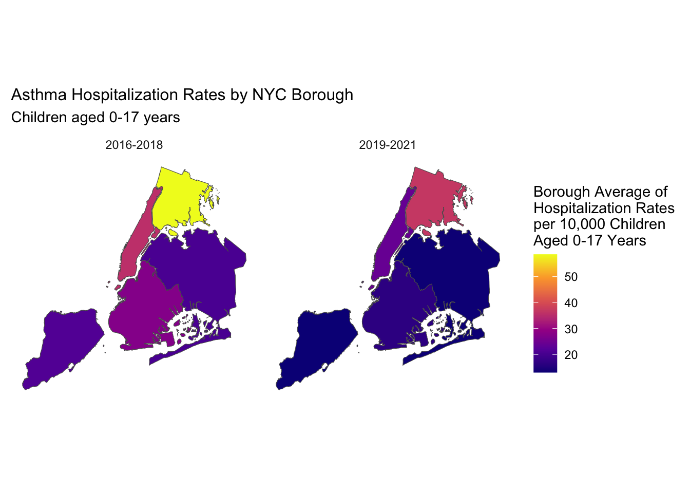

Bronx had the least amount of greenspace, followed by Manhattan, Brooklyn, and Queens. Staten Island had the highest amount of greenspace. This trend is similar between both year groups.
Comparing between the two year groups, Staten Island had the largest increase (258.720 acres) in greenspaces and Manhattan had the least (0.345 acres).
| borough | 2016-2018 | 2019-2021 | Difference |
|---|---|---|---|
| Staten Island | 2812.520 | 3071.240 | 258.720 |
| Bronx | 1130.236 | 1249.861 | 119.625 |
| Queens | 2171.277 | 2182.771 | 11.494 |
| Brooklyn | 1794.986 | 1795.942 | 0.956 |
| Manhattan | 1715.288 | 1715.633 | 0.345 |

In terms of total acres, flagship parks make up the largest proportion of NYC greenspace. This trend is similar for both year groups.
| Greenspace Type | 2016-2018 | 2019-2021 | Difference |
|---|---|---|---|
| Neighborhood Park | 910.00857 | 1169.62510 | 259.617 |
| Managed Sites | 483.30350 | 602.39850 | 119.095 |
| Nature Area | 3084.62632 | 3117.48632 | 32.860 |
| Undeveloped | 190.17075 | 191.35675 | 1.186 |
| Waterfront Facility | 2277.16100 | 2277.69100 | 0.530 |
| Garden | 17.20095 | 17.59995 | 0.399 |
| Playground | 137.85455 | 138.15355 | 0.299 |
7 of the 21 greenspace types had an increase in total acres between the two year groups. No change was seen in the remaining greenspace types.
Top 3 Greenspace Types (Total Acres) Across Boroughs
| Borough | Highest | Second Highest | Third Highest |
|---|---|---|---|
| Bronx | Flagship Park (1532.62) | Parkway (585.51) | Nature Area (312.15) |
| Brooklyn | Community Park (1487.77) | Parkway (827.95) | Flagship Park (571.31) |
| Queens | Flagship Park (1631.46) | Waterfront Facility (1093.79) | Community Park (973.11) |
| Manhattan | Community Park (1098.39) | Flagship Park (1094.31) | Neighborhood Park (207.73) |
| Staten Island | Nature Area (1690.97) | Community Park (1371.96) | Flagship Park (760.79) |
The total acres of each greenspace type for each borough is the same for both year group.
Top categories of greenspace types across the boroughs include Flagship Park, Community Park, Nature Area, Parkway, Waterfront Facility, and Neighborhood Park. We also see that the top 3 greenspace types are different for each borough.